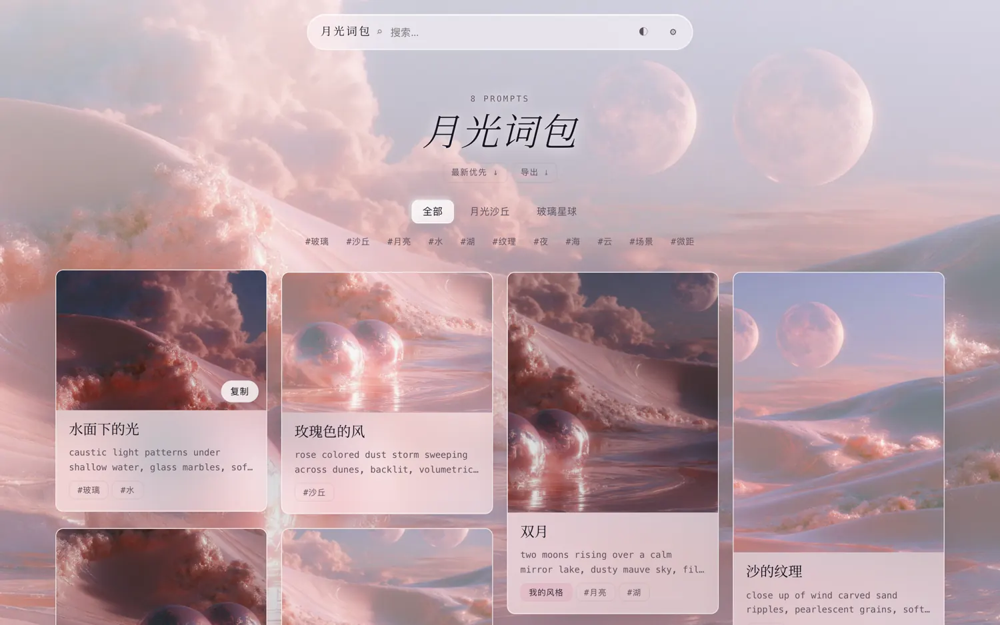
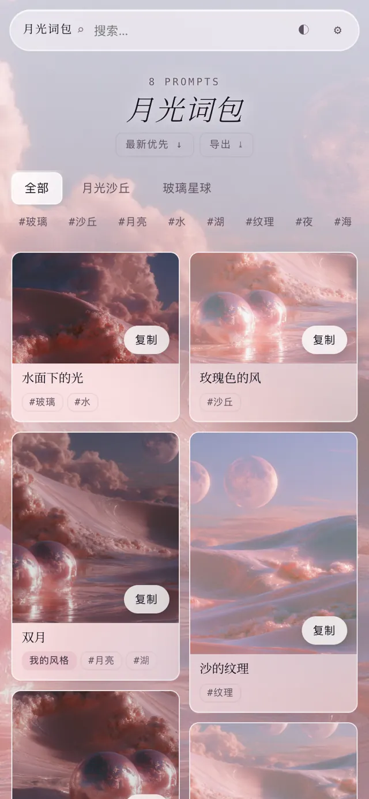
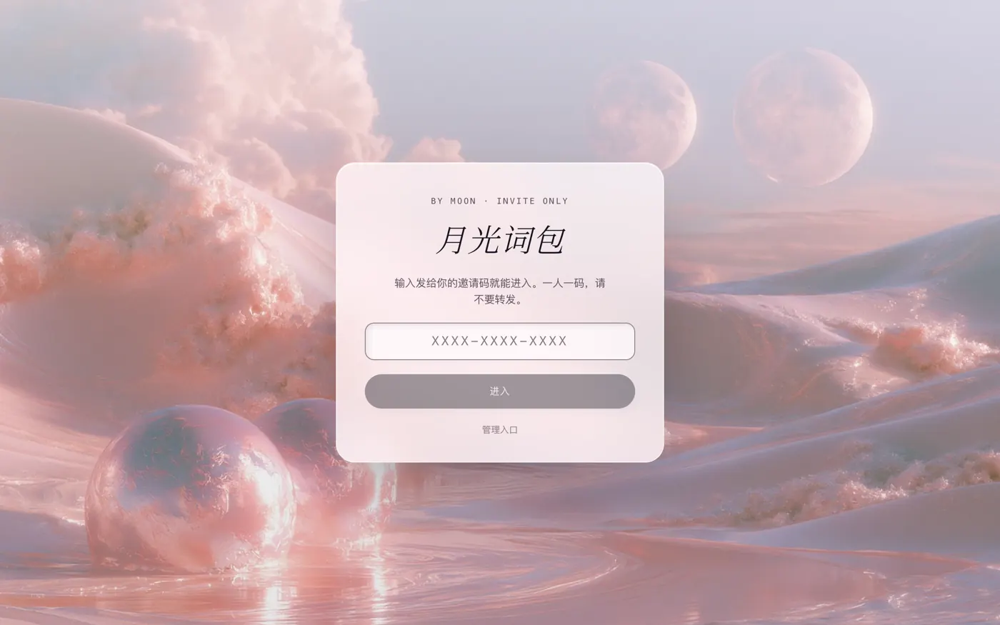
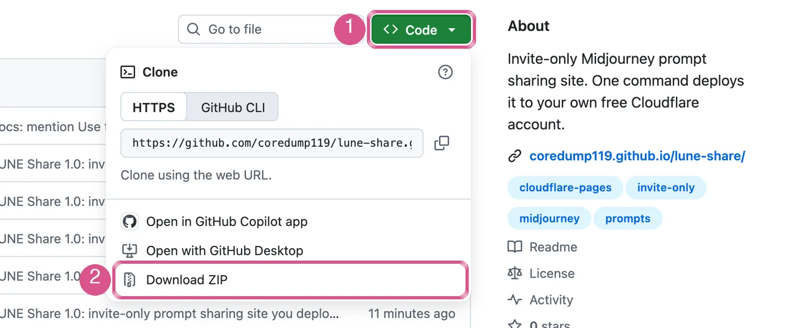
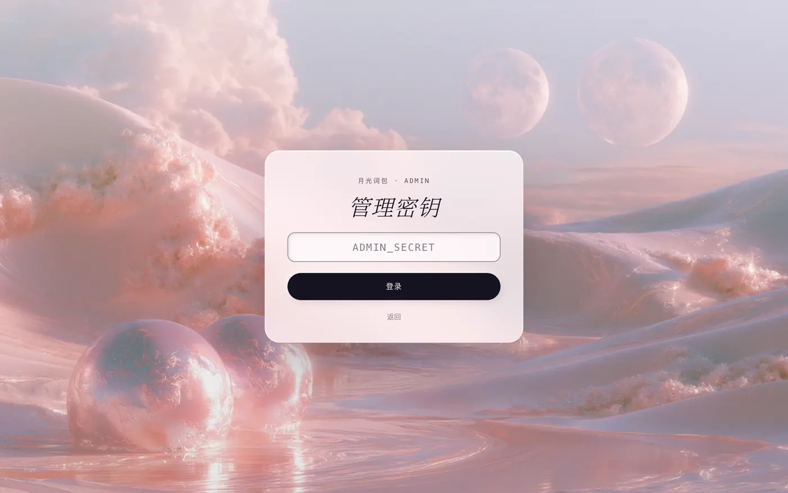
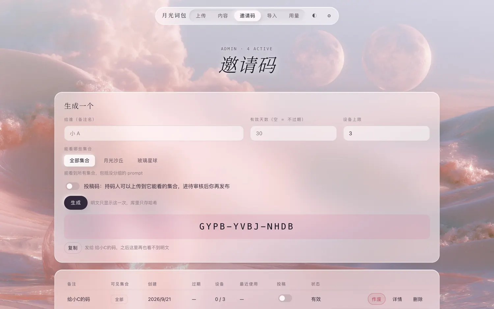
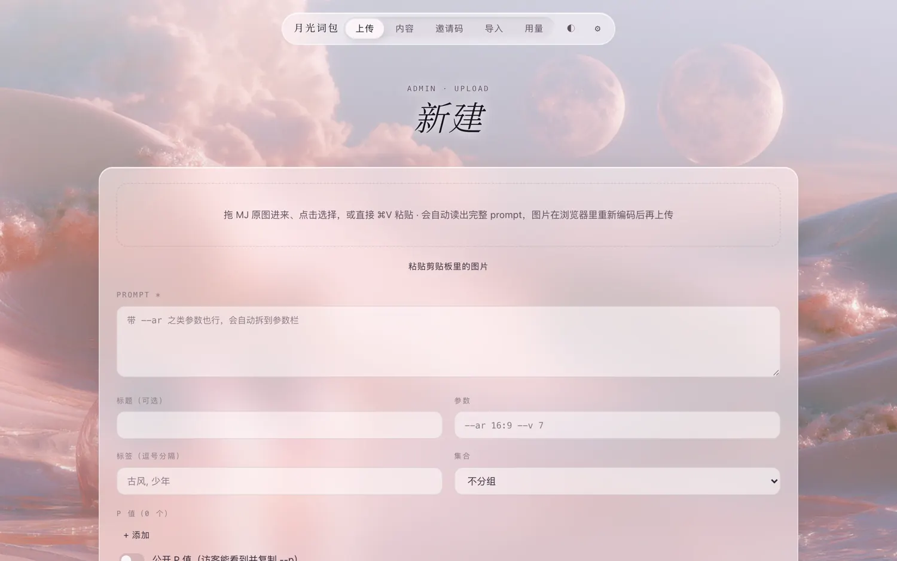
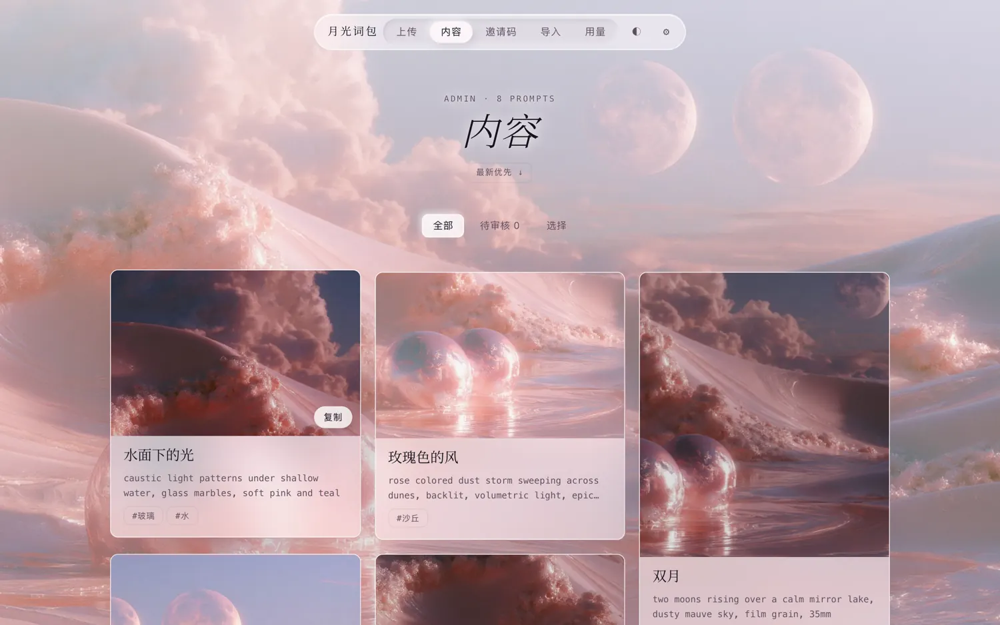

1
注册一个 Cloudflare 账号
约 2 分钟 · 已经有账号就直接打勾你的网站之后就住在这里。注册是免费的，只需要一个邮箱。
- 点这个按钮打开注册页：
打开 Cloudflare 注册页 ↗ - 填邮箱和密码，点 Sign up。
- 去邮箱里点一下验证邮件里的链接。
💡注册完它可能会问你要不要添加网站、要不要买域名。都不用管，直接关掉那个页面就行。
不需要懂代码。整个过程就是：点几下、复制、粘贴、回车。泡杯茶的时间就能弄完。
一个只有拿到邀请码的人才能进的网站。你在后台传图、贴 prompt，朋友打开网址输入码就能看、能一键复制。



先说三件让你放心的事：
① 站是建在你自己的 Cloudflare 账号上的，图片和邀请码都只在你手里，不经过我，也不经过任何别人。
② Cloudflare 是一家很大的网络公司，个人用它的免费额度完全够，不用填银行卡，超了也只是暂停，不会扣钱。
③ 中途哪一步弄错了都没关系，弄不坏任何东西，重来一遍就好。
选一下，下面的步骤会自动换成对应的说明。
你的网站之后就住在这里。注册是免费的，只需要一个邮箱。
它是让等会儿那两条命令能跑起来的「发动机」。装上就行，之后你不需要打开它，也不需要懂它。
就是下载一个压缩包，再解压。和下载别的文件没有区别。
lune-share-main.zip，双击它，旁边会多出一个同名的文件夹。lune-share-main.zip，右键 → 全部解压缩 → 解压。lune-share-main 文件夹拖到桌面上。这样等会儿好找。打开 github.com/coredump119/lune-share，先点绿色的 Code，再点最下面的 Download ZIP：

命令行是什么？就是一个用打字代替点鼠标来指挥电脑的窗口。它长得黑乎乎的有点唬人，但你只需要往里面粘贴我给你的文字，再按回车。不用自己打一个字母。
terminal），按 回车。
注意 % 前面的字变成了 lune-share-main。这就说明它已经「走进」那个文件夹了。没有别的提示是正常的，命令行的习惯是「没消息就是好消息」。
说明文件夹不在桌面上，或者名字不一样。换个万能的办法：在终端里先输入 cd 再按一下空格，然后用鼠标把那个文件夹直接拖进终端窗口，路径会自动填上，再按回车。
lune-share-main 文件夹。确认你能看到里面有 package.json、src 这些东西。如果里面只有另一个同名文件夹，就再点进去一层。cmd 三个字母，按 回车。
看到最后一行以 lune-share-main> 结尾就对了。
PowerShell 在有些电脑上默认禁止运行脚本，会报一段红字。用 cmd 就没有这个问题。
这条命令会自动下载网站需要的零件。你只要粘贴、回车，然后等它跑完。
看到 added … packages 并且最后一行又回到了等你输入的状态，就是成功了。数字和我写的不一样没关系。中间出现黄色的 warn 也不用管，那只是提醒。
意思是电脑还不认识 Node.js。最常见的原因是：你是在装 Node.js 之前打开的这个窗口。把命令行窗口关掉，重新做一遍第 4 步，再来。还不行的话，回第 2 步重新装一次 Node.js。
十有八九是网络问题。再粘贴运行一次同样的命令，通常就好了。如果你在用代理或 VPN，开着或者关掉各试一次。
这条命令会替你把所有麻烦事做完：登录你的 Cloudflare、建数据库、建图片仓库、生成后台密码、把网站发布上线。你只需要点一次「允许」，再回答四个小问题。
moon-prompts，网址就是 moon-prompts.pages.dev。只能用小写英文字母、数字和横线，不能有中文和空格。取个别人不太会用的名字。by moon。不知道写什么就直接回车。回答完它会自己跑一两分钟，一步步打出绿色的 ✓。不用管，等它出现 Done。
最后你会看到意思是浏览器把 Cloudflare 登录页自己的 cookie 拦下了。Safari 最常出这个问题，Cloudflare 之前登录过但状态过期了也会。不是你的问题，也没坏任何东西。这样做：
https://dash.cloudflare.com/oauth2 开头的长网址，整行复制，粘贴到无痕窗口的地址栏打开，登录，点 Allow。还不行的话：在浏览器里打开 dash.cloudflare.com，右上角头像 → Log out，然后重试。
这多半是好消息：授权其实已经成功过一次了。localhost 是你自己电脑上的一个临时小窗口，命令行收到结果后就把它关了，之后再刷新或再点一次授权，就会看到这个页面。不用开梯子，和网络无关。
npm run setup，它会跳过登录这一步。npx wrangler login，这次 Allow 只点一次、不刷新、不关命令行。命令行里会打印一行很长的、以 https://dash.cloudflare.com/oauth2/… 开头的网址。把它整行复制，粘贴到浏览器地址栏里打开，效果一样。
再运行一次 npm run setup 就行。它会问你要不要覆盖（输入 y 回车），已经建好的东西会被找到继续用，不会重复。最常见的原因是网络断了一下，或者授权页面没点 Allow。
说明这个名字已经被别人用了，Cloudflare 自动在后面加了几个字符。以打印出来的那个为准。
别慌，它也保存在 lune-share-main 文件夹里一个叫 .dev.vars 的文件中。这个文件名以点开头，默认看不见，在文件夹里按 ⌘ + ⇧ + . 就会显示。用「文本编辑」打开它。在文件夹上方点「查看 → 显示 → 隐藏的项目」就能看到，用记事本打开它。
/#/admin。把 Admin key 粘贴进去，点登录。



--p 个性化代码不会被传上去。每条 prompt 的 --p 要不要给别人看，由你单独打开，默认是不给看的。下面这些全都在后台页面里点鼠标完成，不用再碰命令行。

| 想做的事 | 在哪里 |
|---|---|
| 怀疑某个码被转发了 | 邀请码 → 点那一行的「详情」能看到它在几台设备上用过 → 点「作废」。对方马上就进不来了 |
| 给码设有效期、限制几台设备能用 | 生成的时候填「有效天数」和「设备上限」 |
| 同一个站放好几套词包，不同的人看不同的 | 在上传页最下面建「集合」，生成邀请码时只点亮对应的集合 |
| 让信任的朋友也能投稿 | 生成码时打开「投稿码」。投稿会先进「内容 → 待审核」，你点通过才公开 |
| 已经在 LUNE 里整理好了 | LUNE 里导出 .lune.json，后台「导入」里选这个文件，文件夹会自动变成集合 |
| 一次处理很多条 | 内容 → 选择 → 批量发布、下架、置顶、删除 |
| 备份 | 画廊标题下面的「导出」，可以存成 .lune.json 或 Word 文档 |
这几件事需要再用一次命令行。做法永远一样：先改文件，然后像第 4 步那样打开命令行并进到文件夹里，粘贴这一条：
等一分钟，看到 Deployment complete 就生效了。
| 想改什么 | 改哪里 |
|---|---|
| 网站名字、名字上面的小字 | 用「文本编辑」记事本打开文件夹里的 wrangler.toml，改 SITE_NAME 和 SITE_TAGLINE 引号里面的字，保存 |
| 不想让访客一键导出 | 同一个文件里，把 EXPORT_FOR = "all" 改成 EXPORT_FOR = "admin" |
| 背景图 | 用你自己的图替换 public 文件夹里的 day.jpg（浅色模式）和 night.jpg（深色模式），文件名保持一样 |
| 用自己买的域名 | 这个在 Cloudflare 网页后台点：Workers & Pages → 你的项目 → Custom domains |
后台页面顶上出现「有新版本」的提示时，像第 4 步那样打开命令行并进到文件夹里，粘贴这一条：
它会自动下载新代码、保留你的 wrangler.toml、.dev.vars 和背景图、更新数据库、重新发布。你的图片和邀请码都在 Cloudflare 上，不会丢。大约两分钟。
wrangler.toml 和 .dev.vars 这两个文件备份好。有它们在，任何一台电脑都能继续管理你的站。个人或者一个群用，绰绰有余。
| 项目 | 免费额度 | 大概意味着 |
|---|---|---|
| 网站访问 | 每天 10 万次请求 | 一个人翻一遍大约用掉几十次 |
| 文字内容 | 5 GB | prompt 文字永远用不完 |
| 图片（选 1 的话） | 总共 1 GB；每天最多传 1000 张 | 大约 3000 张图 |
| 图片（选 2 的话） | 10 GB | 需要在 Cloudflare 绑一次卡才能开通 |
数字以 Cloudflare 官方定价页为准。没绑卡的免费账号超额时只会暂时拒绝访问，第二天恢复，不会产生任何费用。
因为那样你的图、你的 prompt、你的邀请名单就全都存在我的服务器上了。现在这种方式多花你二十分钟，换来的是整个站从头到尾只属于你，我看不到里面的任何东西，哪天我不维护了它也照样能用。
没有，是故意不做的。邀请制要成立，就必须有一段访客碰不到的程序来检查邀请码。如果做成公共网页让你粘贴 Cloudflare 的 key，这个 key 要么落到我手里，要么暴露在每个访客的浏览器里，两种都不安全。
只有你在那条 prompt 上打开了「公开 P 值」才能。没打开的话它根本不会被发到访客的浏览器里，导出的文件里也不会有。投稿者提交的 --p 永远不会公开。
能看到就能复制，这一点任何网站都防不住。这个站能帮你做的是：知道每个码在几台设备上用过、什么时候来过，并且一键作废。不想让访客批量导出的话，按上面「改名字」那一节把 EXPORT_FOR 改成 "admin"。
登录 Cloudflare 网页后台 → Workers & Pages → 点你的项目 → Settings 最下面 Delete。再到 Storage & Databases 里把同名的 D1 和 KV 删掉。删完就什么都不剩了。
想把代码存在自己的 GitHub 上，就在仓库页点 Use this template，建议建成 Private。